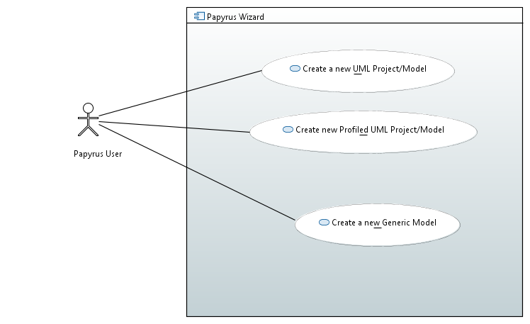
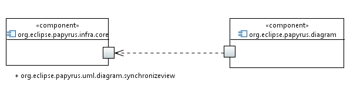

The aim of this plugin is to improve the creation wizard of a new UML project or model.
For example a generic UML Diagram should not be stuck with a specified category
- Root Element Choice (id=Req001):
The wizard shall allow the user to specify the root element e.g. Package or Model
- Root Model Element Name (id=Req002):
Papyrus wizard shall enable to specify the name of the root element of the created model.
- Sash Editor Mode (id=req003):
Should be able to chose between legacy or "1.0" mode to serialize the sash model.
- Template Models (id=Req004):
Papyrus model creation wizard shall enable to load multiple template models. Currently, Papyrus model creation wizzard enable to load only template model even if checkboxes allow you to pick several.
- Profiled Model (id=Req005):
Papyrus model creation wizard shall select profiles to apply to the created model.
- Layout Requirement (id=req006):
The layout of wizard page when selecting the the diagram should be similar to the layout used in oep.infra.natable.comon.wizards.CreateNattableFromCatalogWizard.java
- Generic Model (id=req007):
Papyrus model creation wizard should to create a generic Ecore model.
- Customizable Wizard (id=req008):
The wizard should be easily customizable
- Project creation di name (id=req009):
the wizard shall allow to choose the name of the di/uml/notation files when we create a new project
- Diagram Name (id=req010):
Diagram name should be grayed out if any diagram are not selected

UseCaseDiagram
A user create a new UML Project or Model with a profiled applied
A user should be able to create an Ecore Model
A user should be able to create a standard UML Project/Model

Component Diagram